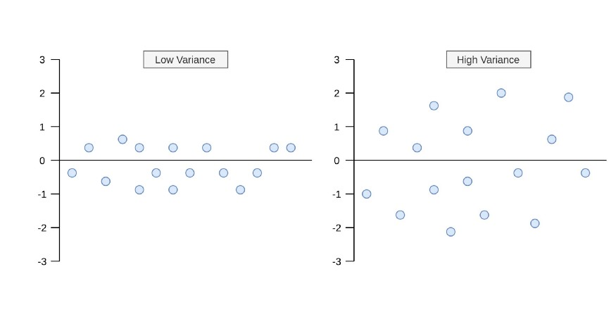
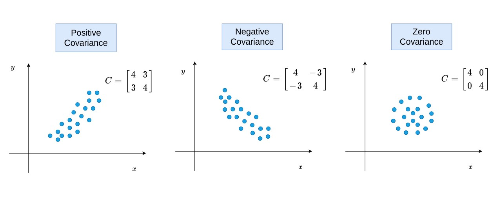
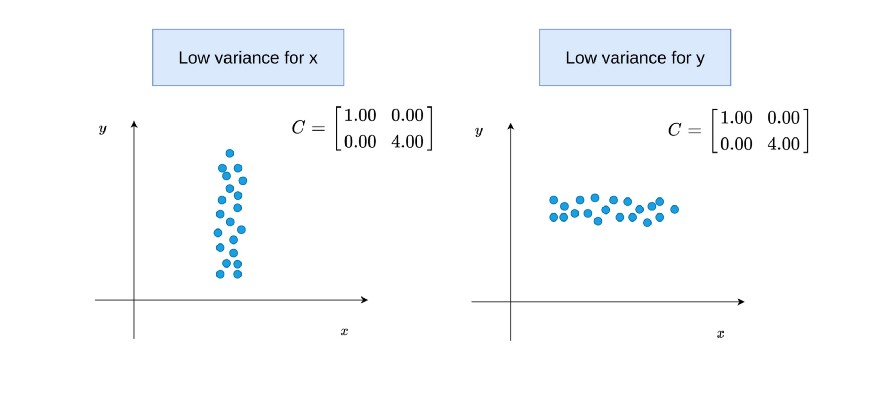
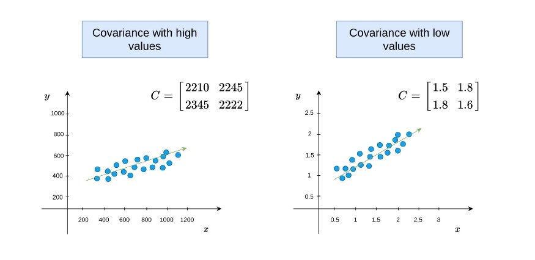
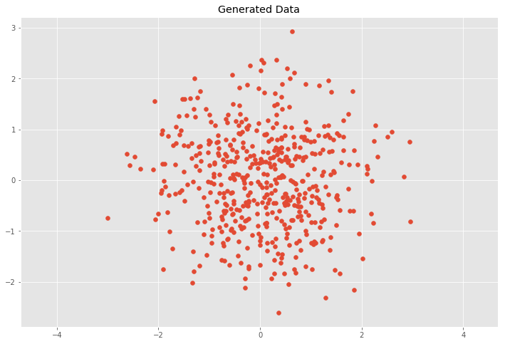

covariance
Variance和CoVariance
Variance
Variance measures the variation of a single random variable(单个随机变量的离散程度)
variance的formula:
- 仅使用sample data, 只能获得sample mean, 使用n-1做为分子
- 使用population data, 知道population mean, 使用n作为分子
如下图展示了Low Variance和High Variance的区别:

CoVariance
covariance is a measure of how much two random variables vary together(两个随机变量的相似程度)
covariance的formula:
Variance和CoVariance的区别就是: CoVariance使用了两个变量的的mean.
variance 可以写成它自己的协方差
Positive, Negative, and Zero States of The Covariance
当和同时为negative或positive时, 他们的乘积就是正向的, 如果最后加和为positive, 表明和方向相同. 同理可知为negative的情况.
而当Covariance为0, 说明两个随机变量并没有相关关系.如下图:

另外一个场景是, covariance为0, 而每个随机变量的variance不同.

因为covariance没有归一化到[-1,1]中, 因此不能说从covariance越大两者的关系就越强

Eigenvalues and Eigenvectors of Covariance Matrix
eigenvalues表示了和的magnitude of the spread
eigenvectors表示了和的方向
下图的第一行两个图: 当covariance是0时, eigenvalues和两个变量的variance是相同的
下图的第二行两个图: 当covariance不是0时, eigenvalues 和 eigenvectors 将从两个随机变量一起计算
{kind=link}
使用numpy.cov()求covariance, 使用numpy.linalg.eig(M)求特征值和特征向量.
CoVariance Matrix
where 代表了维度或者说随机变量的数量(比如身高,体重,年龄等).
covariance matrix是symmetric, .
对角线(diagonal)上的元素是variances, 对角线之外的元素是covariances.
CoVariance Matrix的formula是:
定义一个二维的CoVariance Matrix
我们来生成==0,
import numpy as np
import matplotlib.pyplot as plt
%matplotlib inline
plt.style.use('ggplot')
plt.rcParams['figure.figsize'] = (12, 8)
# Normal distributed x and y vector with mean 0 and standard deviation 1
x = np.random.normal(0, 1, 500)
y = np.random.normal(0, 1, 500)
X = np.vstack((x, y)).T
plt.scatter(X[:, 0], X[:, 1])
plt.title('Generated Data')
plt.axis('equal')
这种情况意味着和是独立的, covariance matrix 是
我们来计算验证一下:
# Covariance
def cov(x, y):
xbar, ybar = x.mean(), y.mean()
return np.sum((x - xbar)*(y - ybar))/(len(x) - 1)
# Covariance matrix
def cov_mat(X):
return np.array([[cov(X[0], X[0]), cov(X[0], X[1])], \
[cov(X[1], X[0]), cov(X[1], X[1])]])
# Calculate covariance matrix
cov_mat(X.T) # (or with np.cov(X.T))
# array([[ 1.008072 , -0.01495206],
# [-0.01495206, 0.92558318]])Linear Transformations
scaling
使用下面的scaling matrix对进行转换(矩阵乘积):
既
矩阵相乘后我们期望得到以下的结果,既:
# Center the matrix at the origin
X = X - np.mean(X, 0)
# Scaling matrix
sx, sy = 0.7, 3.4
Scale = np.array([[sx, 0], [0, sy]])
# Apply scaling matrix to X
Y = X.dot(Scale)
plt.scatter(Y[:, 0], Y[:, 1])
plt.title('Transformed Data')
plt.axis('equal')
# Calculate covariance matrix
cov_mat(Y.T)结果正式我们所期望的
2.png
{kind=link}
linear transformation
使用rotation matrix 和scaling matrix 进行转换:
其中matrix为:
其中是旋转的角度, 使用如下公式进行旋转:
# Scaling matrix
sx, sy = 0.7, 3.4
Scale = np.array([[sx, 0], [0, sy]])
# Rotation matrix
theta = 0.77*np.pi
c, s = np.cos(theta), np.sin(theta)
Rot = np.array([[c, -s], [s, c]])
# Transformation matrix
T = Scale.dot(Rot)
# Apply transformation matrix to X
Y = X.dot(T)
plt.scatter(Y[:, 0], Y[:, 1])
plt.title('Transformed Data')
plt.axis('equal')
# Calculate covariance matrix
cov_mat(Y.T)
# array([[ 4.94072998, -4.93536067],
# [-4.93536067, 5.99552455]]){kind=link}
This leads to the question how to decompose the covariance matrix into a rotation matrix and a scaling matrix .
Eigen Decomposition
Eigen Decomposition是linear transformation和covariance matrix之间的关联.
An eigenvector is a vector whose direction remains unchanged when a linear transformation is applied to it.
是 eigenvector, 是eigenvalue
如果我们将eigenvectors,按列放入Matrix ,所有的eigenvalues作为matrix 的diagonal元素, 则covariance matrix 可以写成:
变换后可得:
C = cov_mat(Y.T)
eVe, eVa = np.linalg.eig(C)
plt.scatter(Y[:, 0], Y[:, 1])
for e, v in zip(eVe, eVa.T):
plt.plot([0, 3*np.sqrt(e)*v[0]], [0, 3*np.sqrt(e)*v[1]], 'k-', lw=2)
plt.title('Transformed Data')
plt.axis('equal')参考:
https://blog.csdn.net/pipisorry/article/details/48788671
https://zhuanlan.zhihu.com/p/37609917
https://towardsdatascience.com/5-things-you-should-know-about-covariance-26b12a0516f1